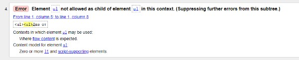

Отзыв на HTML учебник
В данном учебнике меня, как человека, который собирался стать программистом, искренне удивило количество тегов и атрибутов, которые я вижу впервые. Однако позже, осознав причину данного недоразумения, я решила написать этот отзыв во избежание дальнейшего использования ресурса.
Все началось со стилей шрифтов. Тег <font> показался мне подозрительным, поэтому я решила почитать о нем в более надежном источнике. Мои догадки подтвердились:
Описание тега в htmlbook.ru
Далее текст в учебнике форматировался еще несколькими устаревшими атрибутами, некоторые из которых привожу ниже:
- атрибут text
- атрибут bgcolor
- тег <center>
У того самого надежного источника одно мнение на этот счет, дублировать не буду, привожу пример:
Описание в htmlbook.ru
Еще один пример невалидного кода в учебнике: несмотря на то что теги современные, такое их использование не допускается:
Некорректное использование тега <ul> в учебнике
Результат проверки кода W3C валидатором
Я бы могла упомянуть еще много устаревшего кода и технологий, но будет ли смысл? Об уникальности учебника лучше скажут данные примечания:
Упоминание Netscape Navigator в учебнике
Про Netscape Navigator рассказывала в университете в рамках темы "История развития сети Интернет". Браузер умер в 2007-м.
Последствия изучение устаревших тегов и атрибутов
Конкретно для сеошников могу выделить следующие два пункта:
- Относительно бесполезная трата времени;
- Риск получения невалидного кода при редактировании текста на сайте.
Влияние невалидного кода на ранжирование сайта
Заинтересовалась данным вопросом, нашла вот такой ответ: "Google не учитывает валидность разметки при оценке сайта. Тем не менее HTML с ошибками в некоторых случаях может помешать GoogleBot оценить уровень мобильной оптимизации ресурса. К тому же такой невалидный код может привести к некорректному выводу страниц сайта в браузере."
Источник: Джон Мюллер о влиянии невалидного HTML на ранжирование сайта
Грубо говоря, сайт мы устаревшими тегами не похороним, но программистов возможно разозлим ;)